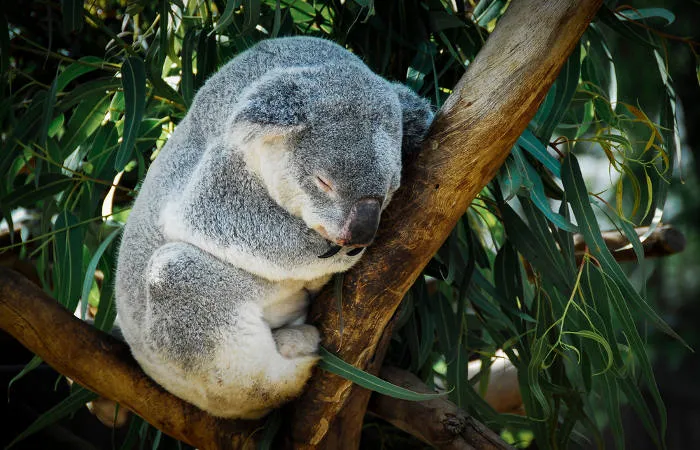

Os coalas
Os coalas são animais mamíferos do grupo dos marsupiais que vivem na Austrália. Ficam a maior parte do tempo em cima de árvores, ocorrendo em locais ricos em espécies de eucalipto, seu principal alimento. Confira a seguir suas características, comportamentos e algumas curiosidades.

Curiosidades sobre os Coalas
- O coala, ao nascer, pesa cerca de 0,5 grama.
- Os coalas machos vivem cerca de 12 anos na natureza, enquanto as fêmeas vivem, em média, 15 anos.
- Os coalas podem dormir até cerca de 18 horas todos os dias.
- O nome coala significa “animal que não bebe” e é uma referência ao fato de que retiram a água de que necessitam das folhas de que se alimentam.
- Os coalas estão classificados como vulneráveis na Lista Vermelha de Espécies Ameaçadas da IUCN, devido à destruição de seu habitat.
Alimentação dos Coalas
Coalas são herbívoros e se alimentam principalmente de folhas de eucalipto. Eles selecionam folhas de cerca de 20 espécies dessa planta. Embora sejam tóxicas para a maioria dos animais, os coalas têm um sistema de desintoxicação eficiente. As folhas de eucalipto têm pouca energia, então os coalas economizam bastante energia e podem dormir até 18 horas por dia.
Habitat dos Coalas
Os coalas são nativos da Austrália e passam a maior parte do tempo em árvores, principalmente em eucaliptos, onde se alimentam e descansam.
Reprodução dos Coalas
Coalas se reproduzem uma vez por ano, e a gestação dura de 25 a 35 dias. As fêmeas possuem uma bolsa (marsúpio) onde os filhotes completam seu desenvolvimento. Cada gestação costuma gerar um filhote, mas, raramente, podem ter dois. Os filhotes se alimentam de leite e deixam a bolsa entre cinco a sete meses de idade.
Comportamento dos Coalas
Coalas são animais solitários e sedentários, conhecidos por passarem a maior parte do tempo dormindo. Sua inatividade está diretamente relacionada à sua dieta de baixas calorias.
Características dos Coalas
Os coalas (Phascolarctus cinereus) são marsupiais e possuem um corpo robusto com pelos densos e macios. Eles possuem uma coloração cinza com partes esbranquiçadas no peito e orelhas franjadas com pelos brancos. Embora pareçam ursos, não são classificados como tal, já que pertencem à família Phascolarctidae.